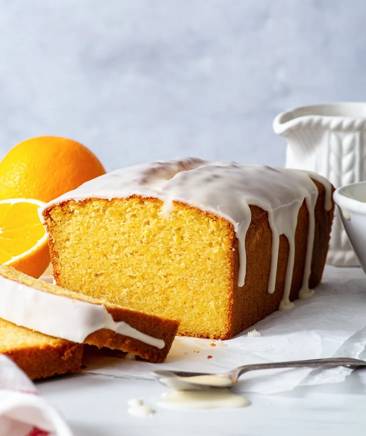

El mejor queque de naranja sin gluten
Este increíble queque de naranja sin gluten te dejará boquiabierto con su intenso sabor a naranja y su textura húmeda, suave y que se derrite en la boca. Utiliza mucha ralladura de naranja y 3/4 de taza de jugo de naranja, por lo que realmente no hay duda de que la naranja es la estrella del espectáculo aquí. También es muy fácil de hacer y no podrías adivinar que no contiene gluten.

Ingredientes:
Queque de naranja
- 200 g de azúcar en polvo/superfina o granulada
- Ralladura de 3 naranjas
- 170 g de mantequilla sin sal, a temperatura ambiente
- 4 huevos (temperatura ambiente)
- 1/2 cucharadita de extracto de vainilla
- 240 g de harina sin gluten
- 65 g de harina de almendras
- 3 cucharaditas de levadura en polvo
- 1/2 cucharadita de goma xanthan (omitir si la harina sin gluten contiene goma xanthan)
- 1/4 cucharadita de goma xanthan
- 180 ml de jugo de naranja (recién exprimido)
Glaseado de naranja
- 120 g (1 taza) de azúcar glas/en polvo, tamizada
- 6-7 cucharaditas de jugo de naranja (recién exprimido)
Preparación:
Queque de naranja
- Ajusta la rejilla en medio del horno, luego precaliente el horno a 180 °C (350 °F) y cubre un molde para queque (900 g) con papel mantequilla o papel para hornear.
- Agregua el azúcar y la ralladura de naranja a un tazón y usa los dedos para frotar la ralladura en el azúcar. Esto ayuda a liberar más aceites esenciales de la ralladura y aumentar el sabor.
- Para los siguientes pasos, es recomendable usar una batidora de pie con el accesorio de paleta o una batidora de mano con batidores dobles. También es posible hacerlo a mano con un batidor manual, pero es muy probable que la mantequilla y el azúcar no queden tan esponjosos como con una batidora.
- Agrega la mantequilla a la mezcla y bate hasta que quede pálido y esponjoso.
- Agrega los huevos uno por uno, mezclando bien después de cada huevo que agregues, hasta que estén bien combinados.
- Agrega la vainilla y mezcla hasta que se combine.
- En otro recipiente, tamiza la harina sin gluten, la harina de almendras, el polvo de hornear, la goma xanthan y la sal.
- Luego de integrar bien los ingredientes secos, agrega tanto los ingredientes secos (3 tandas) como el jugo de naranja (dos tandas) a la mezcla de mantequilla y azúcar, batiendo bien cada vez que se agreguen, hasta obtener una masa bastante suave y sin grumos de harina.
- Transfiere mezcla al molde de queque con papel mantequilla o de cocina, alisa la parte superior y hornea en el horno previamente precalentado durante aproximadamente 1 hora o hasta que suba, esté dorado por encima (puedes clavarle un palillo, si sale limpio significará que está listo), es normal que el queque tenga una grieta en el centro.
- Deja que el queque se enfríe en el molde durante 10 minutos, antes de sacarlo.
Glaseado de naranja
- Revuelve el azúcar en polvo y 6 cucharaditas de jugo de naranja hasta obtener una mezcla espesa sin grumos. (Si el glaseado queda muy espeso, agrega 1 cucharadita extra de jugo, con esto debería quedar una consistencia mucho mejor.)
- Vierte el glaseado sobre el queque enfriado, extendiéndolo uniformemente con el dorso de una cuchara y dejando que gotee por los lados para decorarlo.
- Deja que el glaseado se seque un poco (aprox. 30 minutos a temperatura ambiente) antes de cortar y servir el queque.
Guardado:
- El queque de naranja sin gluten puede ser almacenado en un lugar seco y frío, manteniéndose en perfecto estado por al menos 3-4 días